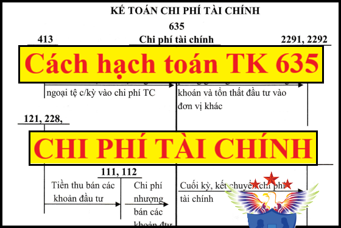

Hướng dẫn cách hạch toán chi phí tài chính - Tài khoản 635 áp dụng chế độ kế toán theo Thông tư 99/2025/TT-BTC mới nhất 2026, hạch toán chi phí lãi vay phải trả, lãi mua hàng trả chậm, lỗ chênh lệch tỷ giá hối đoái, Chiết khấu thanh toán cho người mua...Những khoản chi phí không được hạch toán vào 635
1. Tài khoản 635 - Chi phí tài chính
Nguyên tắc kế toán
a) Tài khoản này phản ánh những khoản chi phí hoạt động tài chính bao gồm:
- Các khoản chi phí hoặc các khoản lỗ liên quan đến các hoạt động đầu tư tài chính, chi phí mua chứng khoán kinh doanh, chi phí đi vay vốn nhưng không được vốn hóa theo quy định, lỗ chuyển nhượng các khoản đầu tư tài chính, chi phí giao dịch bán các khoản đầu tư tài chính;
- Phần chênh lệch giữa giá mua lại trước hạn trái phiếu đã phát hành cao hơn giá trị ghi sổ của trái phiếu;
- Dự phòng giảm giá chứng khoán kinh doanh và dự phòng tổn thất các khoản đầu tư vào đơn vị khác, khoản lỗ tỷ giá hối đoái phát sinh khi bán ngoại tệ hoặc đánh giá lại các khoản mục tiền tệ có gốc ngoại tệ cuối kỳ;
- Các khoản chiết khấu thanh toán cho người mua,...
b) Tài khoản 635 - Chi phí tài chính phải được hạch toán chi tiết cho từng nội dung chi phí. Không hạch toán vào Tài khoản 635 - Chi phí tài chính những nội dung chi phí sau đây:
- Chi phí phục vụ cho việc sản xuất sản phẩm, cung cấp dịch vụ;
- Chi phí bán hàng;
- Chi phí quản lý doanh nghiệp;
- Chi phí kinh doanh bất động sản;
- Chi phí đầu tư xây dựng cơ bản;
- Các khoản chi phí được trang trải bằng nguồn kinh phí khác;
- Chi phí khác.
c) Chi phí phát hành trái phiếu, chi phí đi vay được phân bổ dần phù hợp với kỳ hạn trái phiếu hoặc kỳ hạn vay và được ghi nhận vào chi phí tài chính nếu việc phát hành trái phiếu hoặc đi vay phục vụ cho mục đích sản xuất, kinh doanh thông thường.
d) Lãi phải trả của trái phiếu chuyển đổi được tính vào chi phí tài chính trong kỳ được xác định bằng cách lấy giá trị phần nợ gốc đầu kỳ của trái phiếu chuyển đổi nhân (x) với lãi suất của trái phiếu tương tự trên thị trường nhưng không có quyền chuyển đổi thành cổ phiếu hoặc lãi suất đi vay phổ biến trên thị trường tại thời điểm phát hành trái phiếu chuyển đổi (xem quy định chi tiết tại phần hướng dẫn Tài khoản 343 - Trái phiếu phát hành).
đ) Nếu cổ phiếu ưu đãi được phân loại là nợ phải trả, khoản cổ tức ưu đãi đó về bản chất là khoản lãi vay và phải được ghi nhận vào chi phí tài chính.
2. Kết cấu và nội dung Tài khoản 635:
|
Bên Nợ |
Bên Có |
|
- Chi phí lãi tiền vay, lãi mua hàng trả chậm, lãi thuê tài sản thuê tài chính; - Chiết khấu thanh toán cho người mua; - Các khoản lỗ do thanh lý, nhượng bán các khoản đầu tư tài chính; - Lỗ tỷ giá hối đoái phát sinh trong kỳ; Lỗ tỷ giá hối đoái do đánh giá lại các khoản mục tiền tệ có gốc ngoại tệ tại thời điểm kết thúc kỳ kế toán; - Số trích lập dự phòng giảm giá chứng khoán kinh doanh, dự phòng tổn thất đầu tư vào đơn vị khác (đầu tư vào công ty con, công ty liên doanh, liên kết; đầu tư khác; đầu tư nắm giữ đến ngày đáo hạn) (chênh lệch giữa số dự phòng phải lập kỳ này lớn hơn số dự phòng đã trích lập kỳ trước chưa sử dụng hết); - Các khoản chi phí mua chứng khoán kinh doanh, chi phí chuyển nhượng các khoản đầu tư tài chính. |
- Hoàn nhập dự phòng giảm giá chứng khoán kinh doanh, dự phòng tổn thất đầu tư vào đơn vị khác (chênh lệch giữa số dự phòng phải lập kỳ này nhỏ hơn số dự phòng đã trích lập kỳ trước chưa sử dụng hết); - Các khoản được ghi giảm chi phí tài chính; - Tại thời điểm kết thúc kỳ kế toán, kết chuyển toàn bộ chi phí tài chính phát sinh trong kỳ sang Tài khoản 911 để xác định kết quả hoạt động kinh doanh. |
| Tài khoản 635 không có số dư cuối kỳ | |
3. Cách hạch toán Chi phí tài chính một số nghiệp vụ:
|
3.1. Khi phát sinh chi phí liên quan đến hoạt động mua chứng khoán kinh doanh, bán các khoản đầu tư tài chính, cho vay vốn, mua bán ngoại tệ..., ghi: Nợ TK 635 - Chi phí tài chính Có các TK 111, 112, 141,... Xem thêm: Cách xác định chênh lệch tỷ giá 3.2. Khi bán chứng khoán kinh doanh, thanh lý nhượng bán các khoản đầu tư vào công ty con, công ty liên doanh, liên kết phát sinh lỗ, ghi: Nợ các TK 111, 112,... Nợ TK 229 - Dự phòng tổn thất tài sản (khoản dự phòng đã trích lập để bù đắp số tổn thất) (nếu có) Nợ TK 635 - Chi phí tài chính (số lỗ) Có các TK 121, 221, 222, 228 (giá trị ghi sổ). Việc hoàn nhập các khoản dự phòng đã trích lập đối với các khoản đầu tư có thể được ghi nhận ngay cho từng giao dịch tại thời điểm bán khoản đầu tư hoặc khi xác định số trích lập dự phòng tổn thất khoản đầu tư vào cuối mỗi kỳ kế toán nhưng phải nhất quán theo quy định của Chuẩn mực kế toán Việt Nam. 3.3. Khi nhận lại vốn góp vào công ty con, công ty liên doanh, liên kết, đầu tư khác mà giá trị hợp lý hoặc giá thỏa thuận do các bên thống nhất đánh giá tài sản được chia nhỏ hơn giá trị vốn góp, ghi: Nợ các TK 111, 112, 152, 156, 211,... (giá trị hợp lý tài sản được chia) Nợ TK 229 - Dự phòng tổn thất tài sản (khoản dự phòng đã trích lập để bù đắp số tổn thất) (nếu có) Nợ TK 635 - Chi phí tài chính (số lỗ) Có các TK 221, 222,... Việc hoàn nhập các khoản dự phòng đã trích lập đối với các khoản đầu tư có thể được ghi nhận ngay cho từng giao dịch tại thời điểm thu hồi hoặc khi xác định số trích lập dự phòng tổn thất khoản đầu tư vào cuối mỗi kỳ kế toán nhưng phải nhất quán theo quy định của Chuẩn mực kế toán Việt Nam. 3.4. Trường hợp doanh nghiệp bán khoản đầu tư vào cổ phiếu của doanh nghiệp khác dưới hình thức hoán đổi cổ phiếu, doanh nghiệp phải xác định giá trị hợp lý của cổ phiếu nhận về tại thời điểm hoán đổi. Phần chênh lệch (nếu có) giữa giá trị hợp lý của cổ phiếu nhận về nhỏ hơn giá trị ghi sổ của cổ phiếu mang đi hoán đổi được ghi nhận là chi phí tài chính, ghi: Nợ các TK 121, 221, 222, 228 (giá trị hợp lý cổ phiếu nhận về) Nợ TK 635 - Chi phí tài chính (phần chênh lệch giữa giá trị hợp lý của cổ phiếu nhận về thấp hơn giá trị ghi sổ của cổ phiếu mang đi hoán đổi) Có các TK 121, 221, 222, 228 (giá trị ghi sổ cổ phiếu mang hoán đổi). 3.5. Kế toán dự phòng giảm giá chứng khoán kinh doanh và dự phòng tổn thất đầu tư vào đơn vị khác tại thời điểm kết thúc kỳ kế toán: - Trường hợp số dự phòng phải lập kỳ này lớn hơn số dự phòng đã lập kỳ trước chưa sử dụng hết, doanh nghiệp trích lập bổ sung phần chênh lệch, ghi: Nợ TK 635 - Chi phí tài chính Có TK 229 - Dự phòng tổn thất tài sản (2291, 2292). - Trường hợp số dự phòng phải lập kỳ này nhỏ hơn số dự phòng đã lập kỳ trước chưa sử dụng hết, doanh nghiệp hoàn nhập phần chênh lệch, ghi: Nợ TK 229 - Dự phòng tổn thất tài sản (2291, 2292) Có TK 635 - Chi phí tài chính. 3.6. Khoản chiết khấu thanh toán cho người mua hàng hóa, dịch vụ được hưởng do thanh toán trước hạn theo thỏa thuận khi mua, bán hàng, ghi: Nợ TK 635 - Chi phí tài chính Có các TK 131, 111, 112,.... 3.7. Chi phí liên quan trực tiếp đến khoản vay (ngoài lãi vay phải trả), như chi phí kiểm toán, thẩm định hồ sơ vay vốn, chi phí thu xếp khoản vay,... nếu không được vốn hóa mà được tính vào chi phí tài chính: + Khi phát sinh các khoản chi phí, ghi: Nợ TK 341 - Vay và nợ thuê tài chính (3411) Có các TK 111, 112, 331,... + Khi phân bổ chi phí vay, ghi: Nợ TK 635 - Chi phí tài chính Có TK 341 - Vay và nợ thuê tài chính (3411). 3.8. Doanh nghiệp phản ánh lãi tiền vay định kỳ phải trả, ghi: Nợ TK 635 - Chi phí tài chính Có các TK 111, 112, 335,.... Xem thêm: Điều kiện để chi phí lãi vay hợp lý 3.9. Trường hợp doanh nghiệp thanh toán định kỳ tiền lãi thuê của TSCĐ thuê tài chính, khi bên thuê nhận được hóa đơn thanh toán của bên cho thuê, ghi: Nợ TK 635 - Chi phí tài chính (tiền lãi thuê trả từng kỳ) Có các TK 111, 112,.... 3.10. Khi mua vật tư, hàng hóa, TSCĐ theo phương thức trả chậm, trả góp về sử dụng ngay cho hoạt động SXKD, ghi: Nợ các TK 152, 153, 156, 211, 213 (theo giá mua trả tiền ngay) Nợ TK 133 - Thuế GTGT được khấu trừ (nếu có) Có các TK 111, 112, 331,... - Định kỳ, phản ánh phải trả khoản lãi trả chậm, trả góp cho người bán từng kỳ, ghi: Nợ TK 635 - Chi phí tài chính Có TK 331 - Phải trả cho người bán. - Định kỳ, khi trả tiền cho người bán bao gồm cả nợ gốc và tiền lãi trả chậm, trả góp, ghi: Nợ TK 331 - Phải trả cho người bán Có các TK 111, 112. Đồng thời doanh nghiệp mở sổ theo dõi chi tiết về tình hình tăng, giảm lãi trả chậm, trả góp khi mua tài sản. 3.11. Đối với trường hợp bán trái phiếu Chính phủ theo hợp đồng mua bán lại (repo), khi thực hiện phân bổ số chênh lệch giữa giá bán và giá mua lại trái phiếu Chính phủ của hợp đồng mua bán lại trái phiếu Chính phủ vào chi phí định kỳ theo thời gian của hợp đồng, ghi: Nợ TK 635 - Chi phí tài chính Có TK 171 - Giao dịch mua, bán lại trái phiếu Chính phủ. 3.12. Trường hợp cổ phiếu ưu đãi được phân loại là nợ phải trả, doanh nghiệp phải trả cổ tức theo một tỷ lệ/mức nhất định mà không phụ thuộc vào kết quả kinh doanh trong kỳ là lãi hay lỗ, khoản cổ tức ưu đãi đó về bản chất là khoản lãi vay và phải được ghi nhận vào chi phí tài chính, ghi: Nợ TK 635 - Chi phí tài chính Có TK 332 - Phải trả cổ tức, lợi nhuận. 3.13. Cuối kỳ, kết chuyển toàn bộ chi phí tài chính phát sinh trong kỳ sang Tài khoản 911 để xác định kết quả kinh doanh, ghi: Nợ TK 911 - Xác định kết quả kinh doanh Có TK 635 - Chi phí tài chính. |
Chúc các bạn thành công! Kế toán Diệu Tâm là 1 địa chỉ dạy học kế toán thực hành thực tế tốt nhất tại Hà Nội: Dạy hoàn thiện sổ sách, lập Báo cáo tài chính, quyết toán thuế cuối năm trực tiếp trên chứng từ thực tế.
--------------------------------------------------------------------
